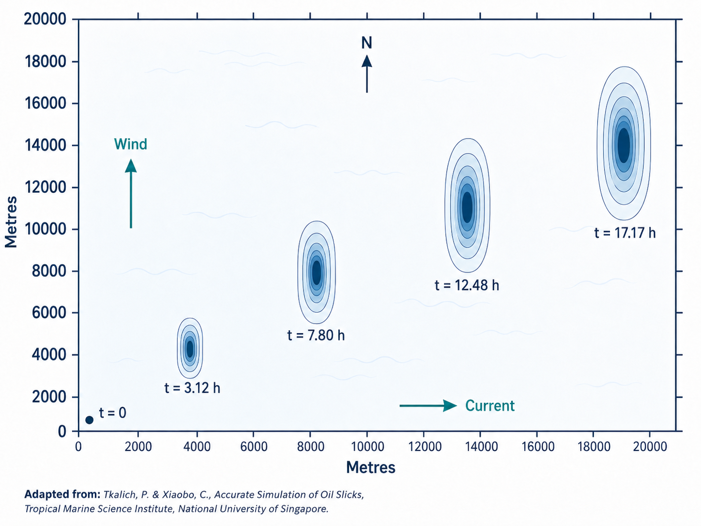

Project 1: Oil-Wave Coupled Slick Model

This project develops a time-dependent 2D Eulerian model for simulating an oil slick evolving on the sea surface. It couples oil thickness and oil transport with a simplified two-band wave field, allowing the model to represent how small and large waves affect slick motion, spreading, and damping.
The core of the model is a closed physical feedback loop: wind drives waves, oil damps waves, waves advect and drift the oil, and the evolving oil thickness feeds back into wave damping. The implementation uses modular Python components for wave evolution, oil velocity closure, finite-volume-style time stepping, grid construction, and simulation output.
Skills demonstrated: Python, numerical modelling, CFD thinking, finite-volume methods, wave-oil coupling, scientific software design.
View Project
Project 2: FDS GUI - Parametric Fire & Explosion Simulation Toolkit
This project is a Tkinter-based graphical front-end for FDS, the Fire Dynamics Simulator. It automates the setup, execution, and post-processing of large numbers of fire and explosion simulations while keeping the generated FDS input files transparent, inspectable, and editable.
The tool supports explosion scenarios, pool-fire cases, pressure probe grids, drag-proxy monitoring volumes, batch case generation, and structured Excel post-processing. It is designed for engineering productivity: speeding up repetitive simulation workflows without turning the analysis into a black box.
Skills demonstrated: Python, Tkinter, FDS automation, fire modelling, explosion modelling, batch simulation workflows, engineering post-processing.
View Project
Project 3: Microphone Enhancer Project

This project explores AI-based audio enhancement for microphones, especially those in wireless headphones where recorded sound can be noisy, muffled, or missing high and low frequencies. The approach converts audio into mel-spectrograms and uses a neural network to restore degraded audio representations.
The model is designed for practical real-time use, with a lightweight structure intended to minimise delay. It combines signal processing, spectrogram-based image restoration, and deep learning to improve audio clarity in a way that could be adapted to live communication tools.
Skills demonstrated: Python, audio processing, mel-spectrograms, TensorFlow / Keras, neural networks, real-time ML thinking.
View Project
Project 4: Car Recommendation Project

This project applies NLP and machine learning to car owner reviews. It recommends similar car models and produces concise summaries of user feedback, helping users compare vehicles without manually reading large volumes of unstructured review text.
The workflow combines topic classification, bag-of-words features, logistic regression, and summarisation models such as BART and Pegasus. The project demonstrates how text analytics can turn noisy customer review data into structured decision-support outputs.
Skills demonstrated: Python, NLP, scikit-learn, text classification, summarisation, Google Cloud Platform, applied machine learning.
View Project